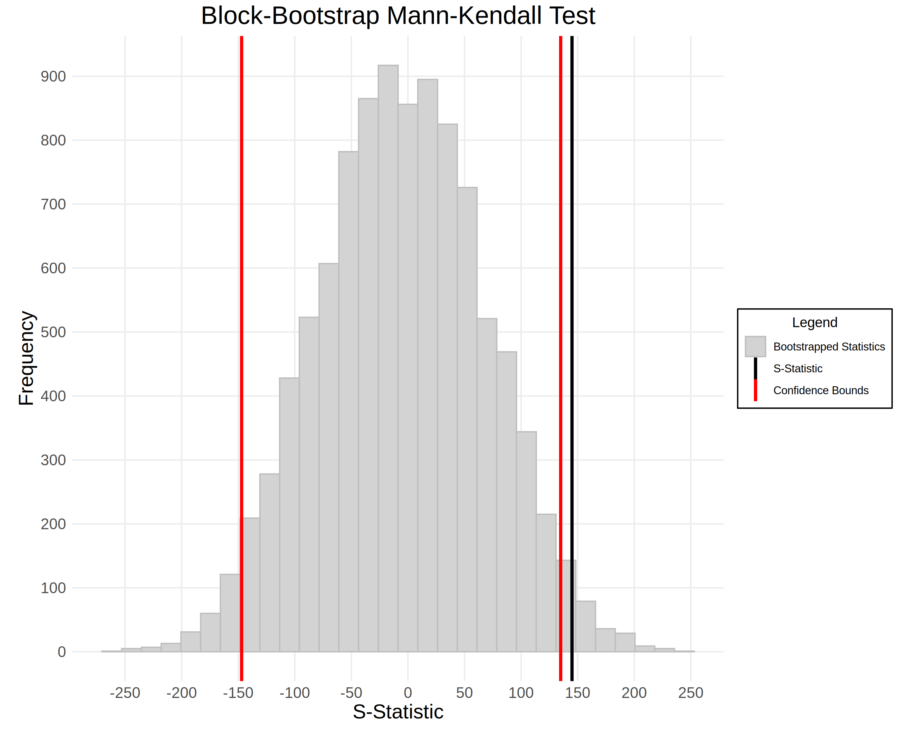
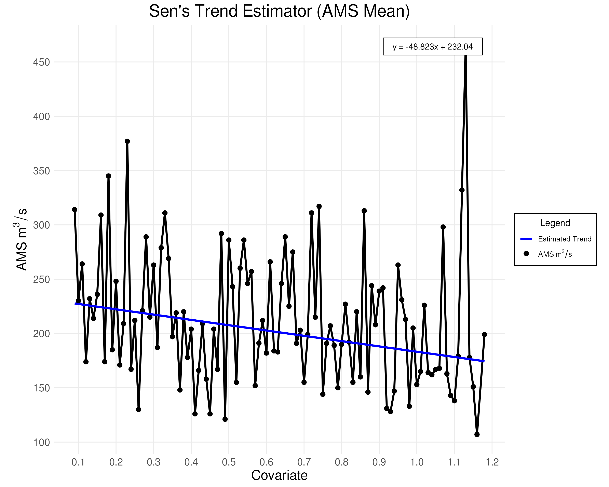
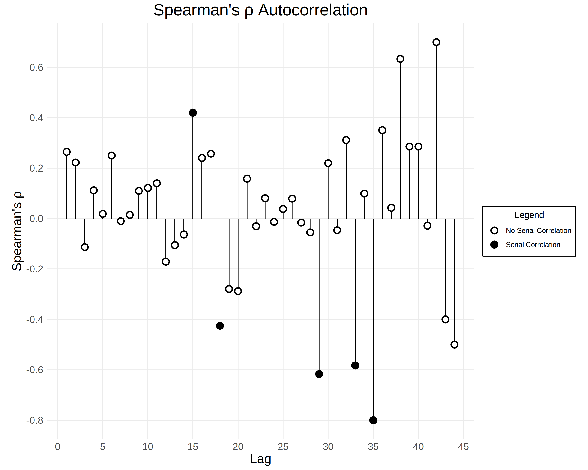

Detecting and Characterizing Trends in the AMS Mean
This section describes the statistical tests (listed in alphabetical order) used to detect and characterizesignificant trends in the mean of the annual maximum series (AMS). These tests help identify a trend, identify autocorrelation, and determine whether a trend is deterministic/stochastic and linear/non-linear.
BB-MK Test
The Block Bootstrap Mann-Kendall (BB-MK) Test assesses the presence of a statistically significant monotonic trend in a time series. The BB-MK test is insensitive to autocorrelation, which is known to produce false positives in the MK test.
- Null hypothesis: No monotonic trend.
- Alternative hypothesis: A monotonic upward or downward trend exists.
To conduct the BB-MK test, we rely on the results of the MK test and the Spearman autocorrelation test.
Steps
- Compute the MK test statistic (see below).
- Use the Spearman test (see below) to identify the least insignificant lag \(k\).
- Resample the time series in blocks of size \(k+1\) without replacement.
- Compute the MK test statistic for each bootstrapped sample.
- Derive the empirical distribution of the MK test statistic from the bootstrapped statistics.
- Estimate the significance of the observed test statistic using the empirical distribution.
Example Plot

KPSS Test
The KPSS Test determines whether an autoregressive time series has a unit root. This test helps assess if the time series has a deterministic linear trend.
- Null hypothesis: The time series has a deterministic linear trend.
- Alternative hypothesis: The time series has a unit root (stochastic trend).
The autoregressive time series shown below has a unit root if \(\sigma_{v}^2 > 0\):
where:
- \(\mu_{t}\) is the drift, or the deviation of \(y_{t}\) from \(0\). Under the null hypothesis, \(\mu_{t}\) is constant (since \(v_{t}\) is constant). Under the alternative hypothesis, \(\mu_t\) is a stochastic process with a unit root.
- \(\beta t\) is a linear trend, which represents deterministic nonstationarity (e.g., climate change).
- \(\epsilon_{t}\) is stationary noise, corresponding to reversible fluctuations in \(y_{t}\). In hydrology, \(\epsilon_{t}\) represents fluctuations in streamflow due to natural variability.
- \(v_{t}\) is random walk innovation, or irreversible fluctuations in \(\mu_{t}\).
Steps
- Fit a linear model to \(y_{t}\) and get the residuals \(\hat{r}_{t}\).
-
Compute the cumulative partial-sum statistics \(S_{k}\) using the following formula:
\[ S_{k} = \sum_{t=1}^{k} \hat{r}_{t} \]Under the null hypothesis, \(S_{k}\) will behave like a random walk with finite variance.
If \(y_{t}\) has a unit root, then the sums will "drift" too much.
-
Estimate the long-run variance of the time series using a Newey-West estimator:
\[ \hat{\lambda}^2 = \hat{\gamma}_0 + 2 \sum_{j=1}^{q} \left(1 - \frac{j}{q+1} \right) \hat{\gamma}_j \]Where \(q = \left\lfloor \frac{3\sqrt{n}}{13} \right\rfloor\) and each autocovariance \(\hat{\gamma}_j\) is:
\[ \hat{\gamma}_j = \frac{1}{n} \sum_{t = j+1}^{n} \hat{r}_t \hat{r}_{t-j} \] -
Compute the test statistic \(z_{K}\):
\[ z_{K} = \frac{1}{n^2\hat{\lambda }^2}\sum_{k=1}^{n} S_{k}^2 \] -
Since the test statistic \(z_{K}\) is non-normally distributed, we compute the p-value by interpolating the table of quantiles from Hobjin et al. (2004) shown below.
| \(q\) | 0.90 | 0.95 | 0.975 | 0.99 |
|---|---|---|---|---|
| Statistic | 0.119 | 0.146 | 0.176 | 0.216 |
Warning: The interpolation only works for \(0.01 < p < 0.10\) (p-values below \(0.01\) and above \(0.10\) will be truncated) and significance levels \(\alpha\) between \(0.01\) and \(0.10\).
Mann-Kendall (MK) Test
The Mann-Kendall (MK) Test detects statistically significant monotonic trends in a time series under the assumption of independence (i.e. no autocorrelation).
- Null hypothesis: There is no monotonic trend.
- Alternative hypothesis: A (upward or downward) monotonic trend exists.
Define \(\text{sign} (x)\) to be \(1\) if \(x > 0\), \(0\) if \(x = 0\), and \(-1\) otherwise.
The test statistic \(S\) is defined as follows:
Next, we need to compute \(\text{Var}(S)\), which depends on the number of tied groups in the data. Let \(g\) be the number of tied groups and \(t_{p}\) be the number of observations in the \(p\)-th group.
Then, compute the normally distributed test statistic \(Z_{MK}\) as follows:
For a two-sided test, we reject the null hypothesis if \(|Z_{MK}| \geq Z_{1 - (\alpha/2) }\) and conclude that there is a statistically significant monotonic trend in the data. For more information, see here.
Phillips-Perron (PP) Test
The PP Test identifies if an autoregressive time series has a unit root.
- Null hypothesis: The time series has a unit root (stochastic trend).
- Alternative hypothesis: The time series has a deterministic linear trend.
Precisely, let \(x_{t}\) be an AR(1) model. Let \(y_{t}\) be a function of \(x_{t}\) with drift \(\beta_{0}\) and trend \(\beta_{1} t\).
- If \(\rho = 1\), then \(x_t\) and hence \(y_t\) has a unit root (null hypothesis).
- If \(\rho < 1\), then \(y_t\) is trend stationary (alternative hypothesis).
Steps
- Fit a linear autoregressive model to the time series \(y_{t}\). Let \(\hat{r}_{t}\) be the residuals of this model. From this model, we can determine \(\hat{\rho}\) (the estimated coefficient on \(y_{t-1}\)) and \(\text{SE}(\hat{\rho})\).
-
Estimate the variance of the residuals \(\hat{\sigma}^2\):
\[ \hat{\sigma^2} = \frac{1}{n - 3} \sum_{t=1}^{n} \hat{r}_{t}^2 \]where \(n\) is the number of data points in the sample. We have \(n-3\) degrees of freedom since there are three parameters in the autoregressive model (\(\beta_{0}\), \(\beta_{1}\), and \(\rho\)).
-
Estimate the long-run variance \(\hat{\lambda}^2\) using a Newey-West style estimator. This estimator corrects for the additional variability in \(\epsilon_{t}\) caused by autocorrelation and heteroskedasticity.
\[ \hat{\lambda}^2 = \hat{\gamma}_{0} + 2\sum_{j=1}^{q} \left(1 - \frac{j}{q + 1} \right) \gamma_{j} \]Each sample autocovariances \(\gamma_{j}\) above is computed for up to \(q = \left\lfloor \sqrt[4]{\frac{n}{25}}\right\rfloor\) lags:
\[ \hat{\gamma}_{j} = \frac{1}{n} \sum_{t = j + 1}^{n} \hat{r}_{t}\hat{r}_{t-j} \] -
Compute the test statistic \(z_{\rho}\) using the following formula:
\[ z_{\rho } = n(\hat{\rho} - 1) - \frac{n^2 \text{SE}(\hat{\rho})^2}{2 \hat{\sigma}^2}(\hat{\lambda }^2 - \hat{\gamma}_{0}) \]
The test statistic \(z_{\rho}\) is not normally distributed. Instead, we compute the p-value by interpolating a table from Fuller, W. A. (1996). This table is shown below for sample sizes \(n\) and probabilities \(p\):
| \(n\) \ \(p\) | 0.01 | 0.025 | 0.05 | 0.10 | 0.50 | 0.90 | 0.95 | 0.975 | 0.99 |
|---|---|---|---|---|---|---|---|---|---|
| 25 | -22.5 | -20.0 | -17.9 | -15.6 | -8.49 | -3.65 | -2.51 | -1.53 | -0.46 |
| 50 | -25.8 | -22.4 | -19.7 | -16.8 | -8.80 | -3.71 | -2.60 | -1.67 | -0.67 |
| 100 | -27.4 | -23.7 | -20.6 | -17.5 | -8.96 | -3.74 | -2.63 | -1.74 | -0.76 |
| 250 | -28.5 | -24.4 | -21.3 | -17.9 | -9.05 | -3.76 | -2.65 | -1.79 | -0.83 |
| 500 | -28.9 | -24.7 | -21.5 | -18.1 | -9.08 | -3.76 | -2.66 | -1.80 | -0.86 |
| 1000 | -29.4 | -25.0 | -21.7 | -18.3 | -9.11 | -3.77 | -2.67 | -1.81 | -0.88 |
Warning: The interpolation only works for p-values \(p > 0.01\) (p-values below \(0.01\) are truncated) and confidence levels \(\alpha > 0.01\).
Runs Test
The Runs Test checks whether the residuals of a regression (e.g., trend approximation from Sen's estimator) are randomly distributed. If the Runs test identifies non-randomness in the residuals, it is a strong indication that the nonstationarity in the data is non-linear.
- Null hypothesis: Residuals are distributed randomly.
- Alternative hypothesis: Residuals are not distributed randomly (e.g., due to nonlinearity).
Steps
- Classify the data based on whether it is above (\(+\)) or below \((-)\) the median. All data points that are equal to the median are removed.
-
Compute the number of contiguous blocks of \(+\) or \(-\) (known as runs) in the data. For example, the sequence \(+++--+++-+-\) has six runs with length \((3, 2, 3, 1, 1, 1)\).
-
Let \(R\) be the number of runs in \(N\) data points (with category counts \(N_{+}\) and \(N_{-}\)). Then, under the null hypothesis, \(R\) is asymptotically normal with:
\[ \mathbb{E}[R] = \frac{2N_{+}N_{-}}{N} + 1, \quad \text{Var}(R) = \frac{2N_{+}N_{-}(2N_{+}N_{-} - N)}{N^2(N - 1)} \] -
Compute the p-value by normalizing \(R\) using the expectation and variance given above.
Example Plot

Sen's Trend Estimator
Sen's Trend Estimator approximates the slope of a regression line. Unlike Least Squares, Sen's trend estimator uses a non-parametric approach which makes it robust to outliers.
Steps
-
For all pairs \((x_i, y_i)\) and \((x_j, y_j)\) where \(x_i \neq x_j\), compute slopes:
\[ m_{ij} = \frac{y_j - y_i}{x_j - x_i} \] -
Take the median of all slopes: \(\hat{m}\).
- Estimate the \(y\)-intercept \(\hat{b}\) as the median of \(y_{i} - \hat{m}x_{i}\) for all \(i\).
Example Plot

Spearman Test
The Spearman test identifies autocorrelation in a time series \(y_{t}\). A significant lag is a number \(i\) such that the correlation between \(y_{t}\) and \(y_{t-i}\) is statistically significant. The least insignificant lag is the smallest \(i\) that is not a significant lag.
- Null hypothesis: The least insignificant lag is \(1\).
- Alternative hypothesis: The least insignificant lag is greater than \(1\).
To carry out the Spearman test, we use the following procedure:
- Compute Spearman's correlation coefficient \(\rho_{i}\) for \(y_{t}\) and \(y_{t-i}\) for all \(0 \leq i < n\).
- Compute the \(p\)-value \(p_{i}\) for each correlation coefficient \(\rho _{i}\) using the formula: $$ t_{i}= \rho_{i} \sqrt{\frac{n-2}{1 - \rho _{i}^2}} $$ The test statistic \(t_{i}\) has the \(t\)-distribution with \(n-2\) degrees of freedom.
- Find the smallest \(i\) such that \(p_{i} > \alpha\). Then \(i\) is the least insignificant lag at confidence level \(\alpha\).
For more information, see the Wikipedia pages on Autocorrelation and Spearman's Rho.
Example Plot
